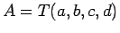
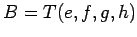

En general, se emplea el principio de extensión para definir las operaciones básicas (suma, resta, etc.) a partir de las operaciones sobre números reales convencionales.
Al trabajar con números trapezoidales se pueden obtener algunas expresiones sencillas, por ejemplo, si  y  son dos números trapezoidales, su suma y su resta son otros números trapezoidales que se pueden calcular como:
El inverso de la resta entre números difusos no es la suma: si y son dos números trapezoidales, entonces